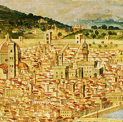
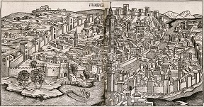

Piazza del Duomo Area: Sample Itinerary, Mon-Sat
- Baptistery
- Cathedral
- Crypt, entrance inside Cathedral
- Lunch Nearby Restaurants
- Duomo Museum
- Take a walk down Via dei Calzaiuoli
- Snack Nearby cafes and ice cream
- Dome or Bell Tower
Detailed Site Information
| Site | Hours | Cost | Reservation | Notes |
|---|---|---|---|---|
| Cathedral | M-F 10-5, Th 10-4:30, Sa 10-4:45, Su 1:30-4:45 | Free | No | Dress appropriate to religious site. Forbidden entry with bare shoulders or legs, hats or sunglasses. |
| Dome | M-F 8:30-7, Sa 8:30-5, Su 1-4 | €15* | Required | Must climb 463 steps, no elevator, beware vertigo and claustrophobia |
| Crypt | M-Sa 10-5, Th 10-4:30, Sa 10-4:45 | €15* | No | Dress appropriate to religious site as above. |
| Bell Tower | Everyday 8:15-7 | €15* | Recommended | Must climb 414 steps, no elevator, beware vertigo and claustrophobia |
| Baptistery | M-F 8:15-10:15/11:15-7:30, Sa 8:15-6:30, Su 8:15-1:30 | €15* | No | Dress appropriate to religious site as above. |
| Museum | Everyday 9-7:30, closed 1st Tu/month | €15* | No | *Joint ticket for all monuments, visit each once within 48 hours |
Nearby Restaurants
- Panini Toscani, $, takeout, Piazza del Duomo, 34/R
- Mister Pizza, $, Piazza del Duomo 5r
- Il Caminetto Ristorante, $$-$$$, Via dello Studio 34/R
- I' Mangiarino, $$-$$$, Via Dello Studio 5R
- Enoteca Alessi, $$-$$$, 29 31 R. Via Dell'Oche 27
Nearby Cafes and Ice Cream
- La Strega Nocciola, Via Ricasoli 16r
- Edoardo il Gelato Biologico, Piazza Del Duomo, 45/R
- Festival del Gelato, Via del Corso
- Bar Pasticceria Cucciolo, Via del Corso 25r
- Gelateria Amorino, Via del Corso 44/46r
- Perche no!..., Via Dei Tavolini 19r
- La Loggia degli Albizi, Borgo Albizi, 39 Rosso
Florence's History
Florence was founded as a Roman settlement during the time of Julius Caesar. By the middle ages it was starting to develop into a major political and artistic center. In the late 1300s the Renaissance began in Florence. This cultural movement transformed the city as well as Europe and the rest of Western civilization. Science, philosophy, art, religion, politics, and literature were transformed by a return to classical ideals with an eye toward improving the future.
